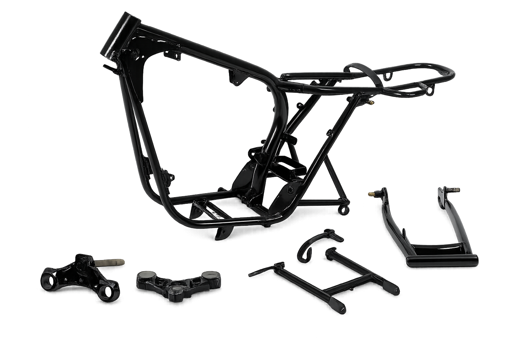
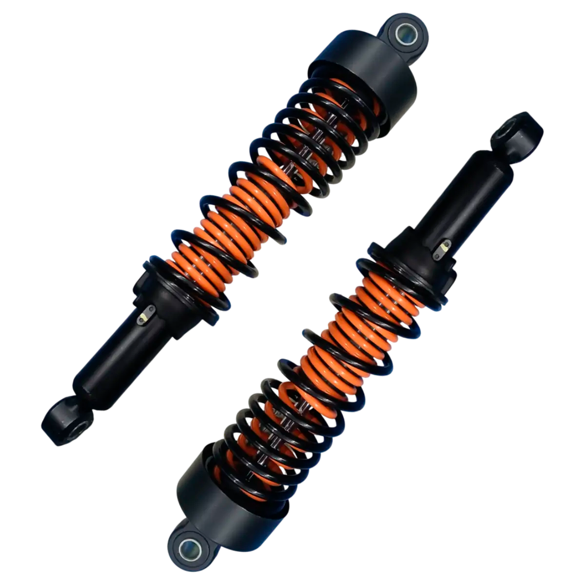
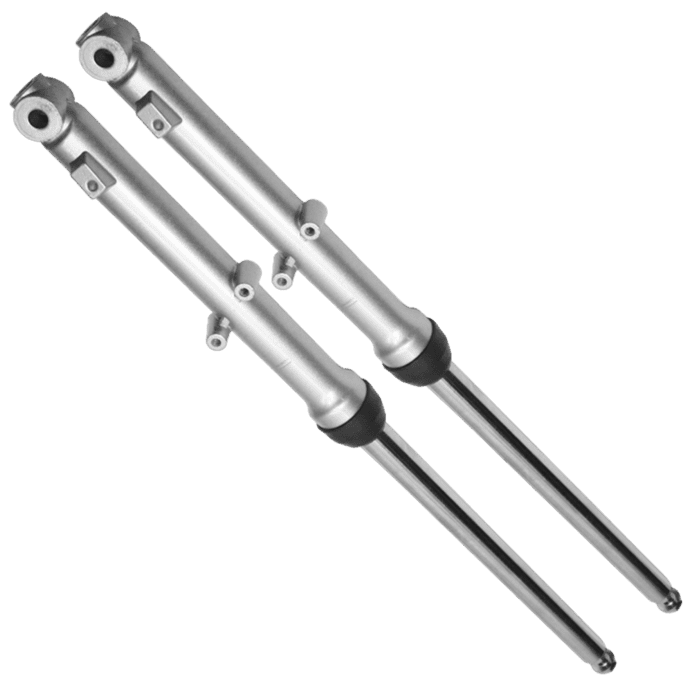

Chasis
Es la base estructural de la moto. Define su rigidez, estabilidad y seguridad. Un buen chasis permite un mejor control y una conducción más segura, especialmente a altas velocidades..

aqui una lista de modelos que puden ser de utilidad
- Steel underbone
- Diamond, steel
- Underbone
- Steel semi-double cradle type with high-tensile strength steel rear sub-frame
- Steel mono backbone
- Tubular steel
- Steel Inner Pivot Diamond
- Diamond
- Steel tube
- Steel diamond
- Half Duplex Cradle
- Diamond tube
- Diamond, steel.
- Aluminium Twin Tube composite twin spar
- Steel diamond-tube
- Diamond, Die-Cast aluminium
- Semi double cradle
- Diamond
- Underbone, steel
- Aluminum double-cradle
- Steel tube backbone
- Aluminium, Diamond Shaped
- Aluminium, Diamond shaped
- Steel Tube
- Aluminium
- Aluminium Deltabox, Diamond
- Aluminium Deltabox
- Steel deltabox frame and aluminum swingarm
- Double cradle, steel
- Double-cradle, high-tensile tubular steel
- Monocoque Aluminum
- Tubular, Semi-Double Cradle
- Backbone frame, high-tensile steel
- High-tensile steel, box-section perimeter
- Semi Double Cradle
- Aluminum perimeter
- High-tensile steel perimeter design with subframe member
- High-tensile steel perimeter design withsubframe member
- High-tensile steel semi-double cradle
- Trellis, high-tensile steel
- Aluminum backbone
- Twin-tube, aluminium
- Tubular diamond, steel
- Tubular steel underbone
- Steel tube underbone
- Double-cradle, steel
- Double-cradle steel
- Steel-tube frame
- Double-cradle steel frame
- Steel tube frame with a hidden rear shock absorber
- Steel frame with tubular backbone
- High-tensile steel-tube underbone
- Steel pipe frame and rear beam-style swingarm
- Chrome-moly steel tubes
- Chrome-moly steel frame. Bolt-on aluminum sub-frame.
- Steel
- Semi-double cradle
- Twin-spar aluminum
- Twin-spar made of five cast sections
- Steel tube construction with aluminum die cast unit and #8232;
- Steel double loop
- Tubular steel space frame, load bearing engine
- Bridge-type frame, steel shell construction
- Tubular steel space, load bearing engine
- Tubular space
- Bridge-type, cast aluminum, load-bearing engine
- Aluminum bridge-type frame with load-bearing engine
- Bridge-type frame, cast aluminum, load-bearing engine
- Two-section frame, front- and bolted on rear frame, load-bearing engine
- Two section frame, front - and bolted on rear frame, load bearing engine
- Double-cradle steel
- Double-cradle tubular steel frame
- Four-part frame concept with front frame and three-part rear frame, load-bearing engine-gearbox unit, rear-seat frame removeable for one-up riding
- Three-section frame consisting of one front and two rear sections, load-bearing engine- gearbox unit, removeable pillion frame for single ride use
- Four-part frame concept with front frame and three-part rear frame, load-bearing engine-
- Tubular steel trellis frame
- Tubular steel trellis
- Tubular steel Trellis
- Tubular steel trellis
- Trellis frame with two cast side frames, closed off by a rear load-bearing element made of techno-polymer loaded with glass fibre for maximum torsional rigidity, double-sided aluminium swingarm
- Aluminum Monocoque
- Aluminum monocoque
- Monocoque Aluminium
- Aluminium alloy. Engine is used as a structural chassis element. Trellis subframe.
- Tubular steel Trellis
- Monocque aluminium
- Aluminum alloy Front Frame
- Central double-cradle-type 25CrMo4 steel
- Chrome-moly tubular space
- Chrome-molybdenum steel central-tube frame
- 25CrMo4 steel central-tube frame
- Chrome-moly tubular space frame, powder-coated
- Tubular steel cradle. Twin-sided, tubular steel swing arm.
- Tubular steel, twin cradle. Twin sided fabrication swing arm.
- Tubular steel twin cradle. Twin-sided, tubular steel swing arm.
- Tubular steel, with twin cradles
- Tubular steel, with twin cradles. Twin sided fabrication swingarm.
- Aluminium beam twin spar. Braced, twin-sided, aluminium alloy with adjustable pivot position swing arm.
- Aluminium. Single-sided, cast aluminium swingarm.
- Aluminium. Single-sided, cast aluminium swing arm.
- Tubular steel with aluminium cradle. Twin-sided, aluminum swingarm.
- Tubular steel. Twin-sided, aluminum swingarm.
- Aluminum twin spar frame. bolt-on aluminium rear subframe
- Tubular steel, with steel cradles. Twin sided aluminium swingarm.
- Aluminium beam twin spar. Rear 2 piece high pressure die cast.
- Modular tubular steel frame fastened to aluminium side plates by high strength bolts. Removable rear subframe.
- Aluminium perimeter
- Aluminium perimeter
- Aluminium dual beam chassis with removable seat support subframe
- Aluminium dual beam chassis with cast and pressed sheet elements. (Sachs steering damper on APRC version)
- Twin-tube stee
- Twin tube, steel
- Double cradle, in high-resistance steel tubing
- Twin tube, steel
- Single-cradle, tubular steel
- High-strength steel single cradle
- Frame in steel tubing and built-in subframe. Aluminium engine connection plates
- Aluminium dual beam with removable tail section
- Cast Aluminum Frame with Integrated Air-Box
- Cast Aluminum with Integrated Air-Box
- Cast aluminium
- CrMo Steel tubular trellis
- ALS Steel tubular trellis
- ALS Steel Tubular Trellis
- Tubular high-tensile steel trellis
- Double beam structure, composed by high-tensile steel pipes and forged components. Bolt on double cradle.
- ALS Steel tubular trellis
- Trestle in steel tubes
- Trestle in steel tubes and plates
- Bassinet type
- Steel trestle in steel tubes
- Steel-tube trellis
- Arch bar truck
- Trestle steel tubes and plates
- Double cradle with steel tubes and plates
- Steel tubes
- Steel trellis upper with cast lower
- Split single cradle frame in high tensile strength steel tube
- Central-tube chromium molybdenum frame with double-cradle
- 25CrMo4 steel central-tube
- Chrome-molybdenum steel central-tube
- Trellis, high-grade chromium-molybdenum steel
- Double cradle tubular frame in ALS steel with detachable rear subframe
- ALS steel twin tube cradle frame
- Steel tubing, closed double cradle
- Closed double-cradle tubular steel frame with elastokinematic engine fastening
- Steel tubing, closed double cradle with elastic-kinematic engine mounting system to isolate vibrations.
- ALS steel twin tube cradle
- Tubular single down tube with lower cradle frame
- Monocoque
- Beam type perimeter
- Tubular Single Down Tube with Lower Cradle Frame
- Steel, perimeter
- Double Cradle Down Tube
- Pressed steel perimeter
- Beam type perimeter frame
- Tubular single down tube with lower cradle frame
- Trellis frame, split chassis
- Double cradle Split Synchro Stiff
- Double cradle Split Synchro Stiff
- Double Cradle SynchroSTIFF
- Double Cradle Split Synchro Stiff Frame
- Single cradle tubular
- Single cradle
- Under Bone Rectangular Tube
- Steel pipe gooseneck
- Rigid gooseneck
- Gooseneck frame
- Gooseneck steel pipes frame
- Dragon nech steel pipe frame
- Multi Link frame
- Gooseneck frame, multlink
Suspensión trasera
Se encarga de la estabilidad en la parte trasera. Es fundamental para la comodidad y para mantener el equilibrio al acelerar..

aqui una lista de modelos que puden ser de utilidad
- Showa® twin shocks
- Twin shocks
- Pro-Link swingarm
- 3-Step Adjustable Spring Loaded Hydraulic
- Monoblock aluminium swing arm with Pro-Link with SHOWA gas-charged damper, hydraulic dial-style preload adjuster and rebound damping adjustments
- Monoblock aluminium swing arm with Pro-Link with Showa gas-charged damper, hydraulic dial-style preload adjuster and rebound damping adjustments
- Monoshock
- Unit swing type
- Monoshock with gas-charged HMAS damper featuring 10-step pre-load and stepless rebound damping adjustment
- Single Showa shock with spring preload and rebound damping adjustability
- Dual Swingarm, 5 stage prload
- Dual shocks, swingarm
- Monoshock
- Pro-Link single shock with five positions of spring preload adjustability
- Monoshock damper with 5 stage adjustable preload.
- Prolink mono with 5 stage pre-load adjuster, steel hollow cross swingarm
- Prolink mono with 5 stage preload adjuster, steel hollow cross swingarm
- Monoshock damper with 7 stage adjustable preload,
- SHOWA BFRC-Lite Pro-Link swingarm with 10-step preload, stepless compression and rebound damping adjustment
- Öhlins TTX36 S-EC Pro-Link swingarm with preload, compression and rebound damping
- Dual shocks
- Prolink mono with 5 stage pre-load adjuster. Steel hollow cross swingarm.
- Unit Pro-Link® HMAS™ single shock with spring preload, rebound and compression damping adjustability
- Monoshock damper with 7 stage adjustable preload
- Swingarm
- Unit Swing
- Dual piggyback shocks
- Unit Swing, monoshock
- Single shock with electronically adjustable spring preload, rebound and compression damping;
- 7-Step Adjustable Monocross Suspension
- 7-Step Adjustable Monocross
- Monocross
- Unit Swing
- Monoshock swingarm
- Independent double wishbone
- Single shock; 7-step preload adjustable
- KYB Single shock, adjustable preload and rebound damping
- Swingarm (link suspension),
- Single shock, adjustable preload and rebound damping
- Öhlins single shock, adjustable preload, compression and rebound damping;
- Fully adjustable Öhlins electronic swingarm (link suspension)
- Double wishbone
- Tetra-Lever with stepless rebound damping adjustment and remote spring preload adjuster / 5.4 in.
- Swingarm with single shock absorber
- Uni-Trak single-shock system with 5-way preload and stepless rebound damping
- Swingarm with single hydraulic shock
- Uni-Trak linkage system and single shock with piggyback reservoir, fully adjustable preload and 22-way rebound damping
- Uni-Trak® linkage system and single shock with adjustable spring preload
- Uni-Trak® gas charged shock with piggyback reservoir with adjustable rebound damping and spring preload
- Uni-Trak® gas charged shock with piggyback reservoir with dual-range (4 turns stepless high speed/19-way low-speed) compression damping, 38-way rebound damping and adjustable preload
- Uni-Trak® gas charged shock with piggyback reservoir with 24-way compression and 21-way rebound damping plus adjustable spring preload
- Uni-Trak® gas charged shock with piggyback reservoir with 24-way compression and 21-way rebound damping plus adjustable spring preload
- Uni-Trak with adjustable dual-range (2 turns high speed / 19-way low-speed) compression damping, adjustable 22-way rebound damping and fully adjustable spring preload
- Uni-Trak® with dual-range (2.25 turns high speed/21-way low-speed) compression damping, 38-way rebound damping and adjustable preload
- KYB Uni-Trak® gas charged shock with piggyback reservoir with dual-range (4 turns stepless high speed/19-way low-speed) compression damping, 38-way rebound damping and adjustable preload
- Wheel TravelUni-Trak® single shock system with 4-way rebound damping and fully adjustable spring preload
- Uni-Trak® single shock system with 24-way compression and 21-way rebound damping, plus adjustable spring preload
- Horizontal back-link with adjustable spring preload
- Horizontal monoshock with stepless rebound damping, remotely adjustable spring preload/5.4 in
- Horizontal Back-link, gas-charged rear shock with rebound damping and spring preload adjustability
- Uni-Trak, gas-charged shock with adjustable preload
- Swingarm type, oil damped, dual shocks
- Swingarm type, coil spring, oil damped
- Swing Arm Type, Coil Spring, Oil Damped
- Twin coil spring shocks
- Link style, solo shock, coil spring, oil damped
- Link style, solo shock, coil spring, oil damped
- Swing arm type, coil spring, oil damped
- Swingarm type, single shock, coil spring, oil damped
- Link type, coil spring, oil damped
- Swingarm type, coilspring, oildamped
- Link-type, fully adjustable spring preload, gas/oil damped, adjustable compression damping, 10.2 inches of travel, (low seat setting 8.7 in. of travel)
- Link type, coil spring, oil damped, adjustable spring preload
- Link type, coil spring, oil damped, adjustable spring preload
- Swingarm type, coil spring, oil damped
- Twin shock, adjustable
- Link type, single shock, coil spring, oil damped
- Showa rear shock, Link type, coil spring, oil damped
- Link type, single shock, coil spring, oil damped
- Double aluminum swingarm, double springs struts, adjustable preload
- Single-sided swing arm/central spring strut
- Cast aluminum 2-sided swing arm, central spring strut, spring pre-load hydraulically adjustable (continuously variable) at handwheel, rebound damping adjustable
- Cast aluminum dual swing arm, central spring strut, spring pre-load hydraulically adjustable, rebound damping adjustable
- Cast aluminium dual swing arm, central WAD spring strut, spring pre-load hydraulically adjustable, rebound damping adjustable
- Cast aluminium dual swing arm, central spring strut, spring pre-load hydraulically adjustable, rebound damping adjustable
- Cast aluminium dual swing arm, central spring strut, spring pre-load adjustable
- Cast aluminum dual swing arm, central spring strut, spring pre-load adjustable
- Cast aluminum single-sided swing arm with BMW Motorrad Paralever; central spring strut
- BMW Motorrad Paralever
- Aluminium beam double-sided swinging arm with central spring strut, spring preload, rebound and compression stage adjustable
- Cast aluminium single-sided swing arm with BMW Motorrad Paralever; WAD strut (travel-related damping), spring pre-load hydraulically adjustable (continuously variable) at handwheel, rebound damping adjustable at handwheel.
- Cast aluminum single-sided swing arm with BMW Paralever; WAD strut (travel-related damping), spring pre-load hydraulically adjustable
- Steel swingarm with central shock strut
- Cast aluminium single swinging arm with BMW Motorrad Paralever
- KYB monoshock, fully adjustable, remote preload adjustment, aluminium double-sided swingarm
- Monoshock, preload and rebound adjustable
- Öhlins fully adjustable monoshock, Aluminium casted single-sided swingarm.
- Progressive linkage with fully adjustable Ohlins monoshock. Aluminium single-sided swingarm
- Fully adjustable monoshock, Remote spring preload adjustment, Aluminium double-sided swingarm
- Fully adjustable monoshock, Electronic compression, rebound damping and spring pre-load adjustment with Ducati Skyhook Suspension Evo, Aluminium double-sided swingarm
- Fully adjustable monoshock , electronic adjustment with Ducati Skyhook, aluminum double-sided Swingarm
- Fully adjustable monoshock ,Remote spring preload adjustment, aluminum double-sided swingarm
- Fully adjustable Öhlins TTX mono shock, aluminum single-sided swingarm
- Fully adjustable Sachs unit. Aluminium single-sided swingarm.
- Fully adjustable Öhlins TTX36 unit. Electronic compression and rebound damping adjustment with Öhlins Smart EC 2.0 event-based mode. Aluminium single-sided swingarm.
- Kayaba monoshock, pre-load and rebound adjustable
- Öhlins monoshock, pre-load and rebound adjustable
- Kayaba rear shock, pre-load and rebound adjustable. Aluminium double-sided swingarm
- Kayaba rear shock, pre-load adjustable.
- Kayaba rear shock, pre-load adjustable
- Fully adjustable Sachs unit. Aluminum single-sided swingarm.
- Fully adjustable Ohlins TTX36 unit. Electronic compression and rebound damping adjustment with Öhlins Smart EC 2.0 event-based mode. Aluminium single-sided swingarm
- Öhlins Monoshock adjustable, Swingarm
- Progressive linkage with fully adjustable Sachs monoshock. Aluminium single-sided swingarm
- Progressive with preload and rebound adjustable monoshock
- WP XACT Monoshock with linkage
- WP Semi-active suspension monoshock
- WP Xplor PDS shock absorber
- WP-PDS Monoshock
- WP Xplor PDS schock absorber
- WP XACT PRO fully adjustable shock
- Mono-shock RSU with linkage
- Mono-shock RSU with linkage and preload adjustment
- Twin RSU’s, with pre-load adjustment
- Öhlins TTX36 twin tube monoshock with piggyback reservoir, adjustable preload, rebound and compression damping
- Fully adjustable Showa piggyback reservoir RSU with remote hydraulic preload adjuster.
- Fully adjustable Ohlins twin shocks with piggy back reservoir
- Öhlins monoshock RSU with linkagel. Öhlins S-EC 2.0 OBTi system electronic compression / rebound damping.
- Öhlins TTX36 twin tube monoshock with preload, rebound and compression damping
- Twin RSUs with adjustable preload
- KYB twin shocks with adjustable preload.
- Showa piggyback reservoir monoshock, Adjustable compression and rebound damping and preload adjustment.
- Ohlins STX40 piggyback reservoir monoshock,
- Twin RSUs with preload adjustment
- Monoshock, Öhlins RSU
- Aluminium alloy swingarm Sachs monoshock absorber adjustable in preload and hydraulic rebound damping.
- Asymmetrical swingarm, monoshock absorber
- Asymetric swingarm. Hydraulic monoshock with adjustable spring preload.
- Aluminium asymmetric swingarm. Adjustable monoshock in spring reload, rebound braking
- ON Sachs monoshock adjustable in: hydraulic compression and rebound damping and spring pre-load
- Öhlins TTX single shock absorber with piggy-back, Electronics management system Ohlins Smart EC 2.0 (OBTi).
- Steel swingarm, monoshock with progressive link system
- Asymmetrical swingarm, monoshock
- Aluminium alloy swingarm, mono shock absorber with progressive link system
- Double hydraulic shock absorber with adjustable preload
- Swingarm in high resistance steel. Hydraulic monoshock absorber
- Aluminium swingarm. Hydraulic monoshock absorber with linkage.
- Dual action single shock absorber, adjustable to 5 positions
- Single hydraulic shock absorber pivoting on engine-transmission assembly
- Single hydraulic shock absorber
- Double sided aluminum alloy swingarm. Sachs monoshock absorber with adjustable preload and rebound damping.
- Aluminium swingarm. Fully adjustable Kayaba monoshock.
- Asymmetric swingarm with monoshock
- Asymmetrical aluminium rear arm. Rear shock absorber with top-out spring. Adjustable preload and rebound.
- Sachs fully adjustable single shock absorber
- Double-sided aluminium swingarm Öhlins TTX single shock absorber with piggy-back. Electronics management system Ohlins Smart EC 2.0 (OBTi).
- Swingarm. Hydraulic monoshock with adjustable spring preload.
- Premium Low Hand-Adjustable Rear Suspension
- Hidden, free piston, coil-over monoshock; 56mm stroke; toolless hydraulic preload adjustment
- Hidden, free piston, coil-over monoshock; 43mm stroke; toolless hydraulic preload adjustment
- Variable rate spring over 36mm piston nitrogen gas-charged emulsion style shock with thread style preload adjustment
- Hand-adjustable emulsion rear suspension
- Hidden, free piston, coil-over monoshock; 56mm stroke; hydraulic preload adjustment
- Twin shocks.
- Linkage-mounted monoshock with automatic electronic preload control and semi-active compression and rebound damping
- Twin shocks. Premium Low Hand-Adjustable.
- Twin shocks, premium low hand-adjustable
- Twin shocks. Premium standard height hand-adjustable.
- Hidden, free piston, coil-over monoshock; 43mm stroke; cam-style preload adjustment
- Linkage-mounted, piggyback monoshock with compression, rebound and hydraulic spring preload adjustability
- Twin shocks, premium low had-adjustable
- Twin shocks, premium low hand-adjustable
- Fox Single Shock with hydraulic adjustment
- Single shock with hydraulic adjust
- Fox Single Shock with Hydraulic adjust
- Dual Shocks w/adjustable preload
- Single shock
- Single Shock with air adjust
- Single Shock with air adjust
- Single Shock w/ith air adjust
- Single Shock w/ Air adjust
- ZF Sachs Fully Adjustable Piggyback IFP
- Ohlins Fully Adjustable Piggyback IFP
- Monotube IFP
- Single shock with air adjust
- Dual shock
- Fox Single Shock with Hydraulic adjustment
- Progressive, single shock absorber Öhlins EC TTX completely adjustable with electronically controlled compression and rebound damping and manually controlled spring preload
- Progressive, single shock absorber Öhlins EC TTX completely adjustable with electronically controlled compression and rebound damping and spring preload
- Aluminium single sided swing arm. Progressive Sachs, single shock absorber with rebound and compression (High speed/Low speed) damping and spring preload adjustment
- Progressive Sachs, single shock absorber with rebound and compression damping and spring preload adjustment
- Progressive Sachs, single shock absorber with rebound and compression damping and spring preload adjustment.
- Progressive, KYB single shock absorber with rebound and compression damping and spring preload adjustment
- Progressive, Sachs ELECTRO- NIC single shock absorber with rebound and compression damping and spring preload adjustment
- Rogressive, single shock absorber Öhlins EC TTX completely adjustable with electronically controlled compression and rebound damping and spring preload
- Progressive Sachs, single shock absorber with rebound and compression damping and spring preload adjustment
- Progressive Öhlins TTX, single shock absorber with rebound and compression damping and spring preload
- Progressive Sachs, semi-active single shock absorber with hydraulic spring preload adjustment MVCSC (MV Agusta Chassis Stability Control)
- Rear swing arm with central shock absorber spring preload adjustable
- Swing arm with central shock absorber with spring pre-load adjustment
- Double shock absorber, coil spring oil damped
- Swing arm with central shock absorber
- Telescopic coil spring oil damped
- Swing arm with central shock absorber spring preload adjustable
- Rear swing arm with central shock absorber with spring pre-load adjustment
- Rear swing arm with double shock absorber
- Rear swing arm with lateral shock absorber with spring preload adjustment and hydraulic rebound brake adjustable
- Rear swing arm with lateral shock absorber with spring pre-load adjustment
- Rear swing arm with central shock absorber
- Rear swing arm with lateral shock absorber with extension hydraulic brake and spring preload adjustment
- Floating engine with double hydraulic rear dumper
- XACT WP PDS mono shock
- XACT WP mono shock
- WP XACT Monoshock with linkag
- WP XPLOR with Pro-Lever linkage
- WP APEX with Pro-Lever linkage
- Swingarm Twin-sided with two spring preload adjustable shock absorbers
- Swingarm Twin-sided with lateral mono shock absorber, adjustable extension and spring preload.
- Swingarm Twin-sided with two spring preload adjustable shock absorbers.
- Swingarm with double shock absorber adjustable spring preload
- Swingarm Twin-sided with two extension adjustable shock absorbers, remote spring preload adjust.
- Swingarm with two shock absorbers, with adjustable spring preload
- Die cast light alloy swing arm with 2 spring preload adjustable shock absorbers
- Swingarm with double shock absorber with adjustable spring preload. No rebound adjustment on rear shock.
- Swingarm with double shock absorber with adjustable spring preload
- 5 step adjustable Twin shock absorber
- Twin shock absorbers, 5 step adjustable
- Spring-in-Spring (SNS)
- Multi-step adjustable Monoshocks with Nitrox
- Multi-step adjustable mono shock
- Spring on Spring (SoS) with Nitrox Gas Canister
- SOS suspension with Nitrox gas canister
- Twin Gas Shock
- Twin shocks, Gas filled with Canister
- 5 way adjustable, Nitrox shock absorber
- Monoshock with Nitrox
- Nitrox Mono Shock Absorber with canister
- Nitrox mono shock absorber with Canister
- 5 step adjustable Twin shock absorber
- Two arm aluminium die-cast swingarm Mono tube floating piston gas assisted shock absorber
- Showa Race tuned Mono Shock
- Monotube Inverted Gas-filled shox (MIG) with spring aid
- Mono Tube - Monoshock, Adjustable with 3 step position
- 3 step adjustable type coil spring with hydraulic damper
- Monotube Inverted Gas filled shox (MIG) with Spring aid 3 step adjustable
- Coil spring with Hydraulic Dampers
- Dual 5 step adjustable hydraulic
- Hydraulic monoshock, 5-step adjustable
- Dual shocks, 5 stage adjustable
- 5 step adjustable hydraulic shocks
- Swing arm with dual hydraulic shocks
- Twin hydraulic shock
- Swing arm with hydraulic shocks
- Two arm Aluminium die-cast swingarm Mono tube floating piston gas assisted shock absorber
- Gas filled Hydraulic Type Coil Spring Shock Absorber
- 2 step adjustable hydraulic shocks
- Monotube inverted Gas filled Shox (MIG)
- Mono Tube - Monoshock
- Showa 40 mm piston, piggy-back reservoir shock with adjustable spring preload, compression and rebound damping
- Multi-link suspension
- Rigird
- Rigid
- Multi-link
Suspensión delantera
Absorbe los impactos en la parte frontal. Es clave para mantener el control al frenar y al pasar por irregularidades en la vía..

aqui una lista de modelos que puden ser de utilidad
- 31mm Showa® telescopic fork
- 37mm Upside down forks
- 31mm Telescopic forks, 130mm axle travel
- Telescopic fork
- Showa 45mm cartridge-type inverted telescopic fork with dial-style preload adjuster and DF adjustments
- Showa 45mm cartridge-type inverted telescopic fork with dial-style preload adjuster and damping adjustment
- Showa SFF-BP USD fork
- 43mm Showa SFF-BP fork with spring preload, rebound and compression damping adjustability
- Telescopic fork, 31 mm
- Telescopic USD fork, 41mm
- Telescopic fork,
- Upside down forks
- 41mm telescopic fork
- 41mm Showa Separate Function front Fork Big Piston (SFF-BP) USD forks.
- Showa 41mm SFF-BP USD forks, pre-load adjustable
- 41mm Showa Separate Function front Fork Big Piston (SFF-BP) USD forks
- SHOWA BPF 43mm telescopic fork with preload, compression and rebound adjustment,
- 43mm Öhlins NPX Smart-EC Front Fork with electronically-controlled preload, compression and rebound adjustments.
- Inverted telescopic fork
- 37mm fork
- 41mm inverted Big Piston Fork with spring preload, rebound and compression damping adjustability
- Telescopic forks
- Telescopic fork, 26mm
- Telescopic fork 41mm
- 43mm inverted fork with electronically adjustable rebound and compression damping;
- Telescopic fork, 41mm
- Single A-arm
- Independent double wishbone
- Ndependent double wishbone
- Telescopic forks, Ø37.0 mm inner tube
- 41mm KYB telescopic fork
- 41mm inverted fork, adjustable preload, compression and rebound
- 41mm KYB inverted fork, adjustable preload, high/low speed compression and rebound
- Fully adjustable Öhlins electronic telescopic forks, 43 mm
- Upside-down telescopic fork, 41 mm
- Double wishbone with 5-way adjustable spring preload
- Double Wishbone
- 43mm inverted, telescopic fork with adjustable rebound damping and spring preload / 4.4 in.
- Single A-arm with twin shock absorbers
- 30mm hydraulic telescopic fork
- 33mm telescopic fork
- 37mm telescopic fork
- 43mm inverted cartridge fork with adjustable compression damping
- 49mm inverted telescopic coil-spring fork with 16-way compression damping and 16-way rebound damping
- 36mm inverted telescopic cartridge fork with 20-way compression damping / 10.8 in.
- 36mm inverted telescopic cartridge fork with 20-way compression damping
- 48mm inverted telescopic coil spring fork with 23-way compression damping and 20-way rebound damping
- KYB 49mm inverted telescopic coil-spring fork with 16-way compression damping and 16-way rebound damping
- 33mm leading axle telescopic fork with 4-way rebound damping
- 41mm hydraulic telescopic fork
- 41mm inverted cartridge fork with stepless compression and rebound damping, adjustable spring preload/4.7 in
- ø41 mm inverted fork with compression and rebound damping and spring preload adjustability
- 37 mm telescopic fork
- Telescopic, coil spring, oil damped
- Telescopic
- Telescopic, Coil Spring, Oil Damped
- Blacked-out, inverted telescopic, coil spring, oil damped
- Inverted telescopic, coil spring, oil damped
- Inverted telescopic, coil spring, oil damped, 43 mm
- Telescopic oil-damped forks
- Telescopic, coil sprung, oil damped
- Telescopic, leading axle, oil damped, 10.2 inches of travel, (low seat setting 8.7 in. of travel)
- Telescopic, coil spring, oil damped, adjustable damping force
- Inverted telescopic, coil spring, oil damped, adjustable damping force
- Inverted telescopic, coil spring
- Showa BPF, Inverted telescopic, coil spring, oil damped
- Inverted telescopic, coil spring, oil damped
- Telescopic front fork, Ø 35 mm
- Single-bridge telescopic forks
- Telescopic fork, 41 mm
- Upside-down telescopic fork, Ø 43 mm
- Inverted fork, Ø 41mm
- Inverted telescopic fork, Ø 41mm
- BMW Motorrad Duolever; central spring strut
- BMW Motorrad Duolever
- Upside-down telescopic forks, slider tube diameter 45 mm spring preload, rebound and compression stage adjustable
- BMW Motorrad Telelever; stanchion diameter 37 mm, central spring strut
- Upside-down telescopic fork, Ø 45 mm
- Upside-down telescopic forks, 46 mm fixed-fork-tube diameter
- Telescopic forks with 43 mm fixed-tube diameter
- KYB 46 mm upside-down fork, fully adjustable
- 50mm adjustable USD forks.
- Ø 48 mm Öhlins adjustable usd fork, TiN treatment.
- Ohlins fully adjustable 48mm usd forks
- 48 mm fully adjustable usd fork
- Ø 48 mm fully adjustable usd fork, Electronic compression and rebound damping adjustment with Ducati Skyhook Suspension Evo
- 50mm fully adjustable usd forks, electronic compression and rebound damping adjustment with Ducati Skyhook
- 50mm Öhlins fully adjustable usd forks, electronic compression and rebound damping adjustment with Ducati Skyhook
- Öhlins NIX 43mm with TiN treatment, fully adjustable used fork
- Fully adjustable Showa BPF fork 43 mm chromed inner tubes
- Öhlins NPX25/30 pressurized 43 mm fully adjustable fork with TiN treatment. Electronic compression and rebound damping adjustment with Öhlins Smart EC 2.0 event-based mode
- Marzocchi fully adjustable 45 mm usd fork
- Marzocchi fully adjustable 45 mm USD fork
- Öhlins fully adjustable Ø48 mm usd fork
- 46mm fully adjustable usd forks
- Upside-down Kayaba telescopic fork, Ø 41mm
- Upside-down telescopic fork, Ø 41mm
- Upside down Kayaba 41 mm fork
- Fully adjustable Showa BPF fork. 43 mm chromed inner tubes
- Öhlins NIX30 43 mm fully adjustable fork with TiN treatment. Electronic compression and rebound damping adjustment with Öhlins Smart EC 2.0 event-based mode
- Öhlins 48mm adjustable usd forks.
- Marzocchi fully adjustable 45mm usd forks
- 43mm USD
- WP XACT-USD, Ø 48 mm
- WP Semi-active suspension USD Ø 48 mm
- WP XPlor 48 upside-down fork
- WP XPLOR-USD, Ø 48 mm
- WP-USD Xplor 48 with preload adjuster
- WP XACT PRO 48 mm closed cartridge
- WP XACT PRO 48 mm
- Showa cartridge forks, 47mm
- 47 mm Showa cartridge forks
- 41mm cartridge forks
- Öhlins 43 mm upside down NIX30 forks with adjustable preload, rebound and compression damping
- Showa 47mm upside-down 1 1 cartridge front forks, compression and rebound adjuster.
- Showa 47mm fully adjustable upside down forks
- Showa 45mm fully adjustable upside down forksl
- Öhlins 43mm fully adjustable USD forks. Öhlins S-EC 2.0 OBTi system electronic compression / rebound damping
- Ohlins 43 mm NIX30 upside down forks with adjustable preload, rebound and compression damping
- 43mm USD Marzocchi forks
- KYB 41mm cartidge forks
- Showa 41 mm upside down separate function big piston forks (SF-BPF), Adjustable compression damping, rebound damping and preload adjustment.
- Showa 41mm upside down big piston forks
- Öhlins USD cartridge forks
- Kayaba upside-down fork, Ø 41 mm stanchions adjustable in preload and hydraulic rebound damping
- Upside down hydraulic fork, 40 mm.
- Upside down hydraulic fork
- Kayaba 41-mm stanchion fork, aluminium radial calliper mounting bracket. Adjustable spring preload and rebound damping.
- Sachs fork 43mm stanchions, adjustable compression and rebound
- Öhlins NIX upside-down fork, Ø 43 mm stanchions. Electronics management system Ohlins Smart EC 2.0 (OBTi).
- Ø 41 mm telescopic upside down fork
- Upside-down fork with Ø 40 mm stanchions
- Upside down fork with Ø 41 mm stanchions
- Telescopic fork, 30mm
- Hydraulic telescopic fork, 33 mm
- Upside down fork with Ø 41 mm stanchions.
- Telescopic hydraulic fork with Ø 37 mm stanchions
- Telescopic hydraulic fork
- Kabaya Upside-down fork, 41 mm. Adjustable hydraulic rebound damping and spring preload.
- Fully adjustable Ø43 mm upside-down Kayaba fork with counterspring
- Kayaba Ø 41 mm USD with top out spring
- Sachs upside-down “one by one” fork, Ø 43 mm stanchions. Forged aluminium radial calliper mounting bracket. Completely adjustable spring preload and hydraulic compression and rebound damping.
- Upside down hydraulic fork, 41 mm.
- 41mm Upside down hydraulic fork
- 49 mm Dual Bending Valve fork
- Single cartridge 43 mm inverted with aluminum fork triple clamps; triple rate spring
- Dual-bending valve 49 mm telescopic with aluminum fork triple clamps; dual rate spring; ´beer can´ covers
- 49 mm fork set, free valve right hand and cartridge style left hand
- Telescopic fork, 49mm dual bending valve
- 47mm inverted fork with electronically adjustable semi-active damping control. Aluminum fork triple clamps.
- Telescopic Fork. 49mm Dual Bending Valve.
- Telescopic fork, 49 mm dual bending valve
- Dual-bending valve 49 mm telescopic with aluminum fork triple clamps; dual rate spring
- 43 mm inverted fork with compression, rebound and spring preload adjustability. Aluminum fork triple clamps.
- Dual-bending valve 49 mm telescopic with aluminum fork triple clamps; dual rate spring; gaiter covers
- Inverted Telescopic Cartridge Fork
- Telescopic forks with air adjustment
- Inverted Telescopic Fork
- Telescopic fork 46mm
- Telescopic fork, 46 mm
- Telescopic Fork
- ZF Sachs Fully Adjustable Inverted Telescopic Cartidge Fork
- Ohlins Fully Adjustable Inverted Telescopic Cartidge Fork
- Telescopic fork
- Telescopic forks, 46 mm
- Öhlins Nix EC hydraulic “upside down” front fork with TIN superficial treatment. Completely adjustable with electronically controlled compression and rebound damping with manually controlled spring preload.
- Öhlins Nix EC hydraulic “upside down” front forks with TiN superficial treatment.Completely adjustable with electronically controlled compression and rebound damping with manually controlled spring preload.
- Marzocchi “UPSIDE - DOWN” telescopic hydraulic fork with adjustable rebound-compression damping and external spring preload.
- Marzocchi upside down telescopic hydraulic fork, 43 mm
- Marzocchi “UPSIDE DOWN” telescopic hydraulic fork with rebound-compression damping and spring preload external and separate adjustment
- Marzocchi UPSIDE DOWN telescopic hydraulic fork with rebound-compression damping and spring preload external and separate adjustment
- Marzocchi “UPSIDE DOWN” telescopic hydraulic fork with rebound-compression damping and spring preload external and separate adjustment.
- KYB “UPSIDE DOWN” telescopic hydraulic fork with rebound and spring preload adjustment
- Sachs ELECTRONIC “UPSIDE DOWN” telescopic hydraulic fork with rebound – compression damping and spring preload ex- ternal and separate adjustment
- Öhlins Nix EC hydraulic “upside down” front forks with TiN superficial treatment. Completely adjustable with electronically controlled compression and rebound damping with manually controlled spring preload.
- Marzocchi “UPSIDE DOWN” telescopic hydraulic fork with rebound-compression damping and spring preload external and separate adjustment
- Öhlins Nix “UPSIDE DOWN” telescopic hydraulic fork with rebound-compression damping and spring preload external and separate adjustment
- Sachs “UPSIDE DOWN” semi-active telescopic hydraulic fork MVCSC (MV Agusta Chassis Stability Control)
- Marzocchi upside down telescopic hydraulic fork
- Upside-down forks Ø 41mm
- Upside-down forks Ø 50mm
- Upside - down forks,.35mm
- Telescopic forks Ø 41mm
- Upside down 41mm fork
- Adjustable Upside-down forks 50mm
- Upside-down forks 50mm
- Upside down 50mm fork
- 41mm Upside-down forks
- 41mm Upside down forks
- Telescopic fork
- XACT 35 WP Upside-Down fork, Ø 35 mm
- XACT 43 WP Upside-Down fork, Ø 43 mm
- WP XPLOR-USD, 48 mm
- WP APEX 48
- Hydraulic telescopic fork Ø 40 mm
- Upside down hydraulic telescopic fork Ø 41 mm, with adjustable extension and spring preload.
- Hydraulic telescopic fork 40mm
- Hydraulic telescopic fork.
- Telescopic fork , Ø 45 mm
- 45 mm hydraulic telescopic fork
- Standard swingarm 46 mm, with radical calliper mountain bracket and telescopes on the stanchions
- Hydraulic telescopic fork Ø 45 mm
- Kayba hydraulic fork with 40 mm stanchions
- Hydraulic telescopic fork
- 45 mm hydraulic telescopic fork, with radial calliper mounting brackets.
- Telescopic fork 44.8mm
- Telescopic hydraulic fork with 40 mm stanchions
- Telescopic with double anti friction bush
- Telescopic with anti friction bush
- Hydraulic, Telescopic Type
- Hydraulic, Telescopic
- Telescopic USD forks, 37mm
- Up-Side Down (USD) Forks, 43mm forks
- Telescopic, 37 mm Conventional fork
- Telescopic, with anti-friction bush
- Telescopic, with anti-friction bush
- Telescooic fork, 37 mm
- Telescopic with Anti-friction Bush
- Telescopic with anti-friction bush
- Telescopic with double anti friction bush
- Telescopic, 37mm forks
- Telescopic, 43mm forks
- Telescopic 31mm with anti-friction bush
- Inverted cartridge telescopic Fork
- Showa Race tuned Telescopic Forks
- Telescopic Forks
- Telescopic Forks with Preload Adjuster
- Telescopic hydraulic
- Telescopic Hydraulic
- Telescopic Suspension with Hydraulic Dampers
- Telescopic oil damped
- Telescopic spring type hydraulic
- Telescopic
- Telescopic oil-damped
- Showa 41 mm inverted cartridge forks, with adjustable spring preload, compression and rebound damping
- Springer fork
- Zero Engineering Springer
- Zero design springer fork
- Showa 43 mm Big Piston Separate Function forks, with adjustable spring preload, compression and rebound damping
- Showa 43 mm inverted cartridge forks, with adjustable spring preload, compression and rebound damping